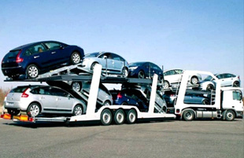
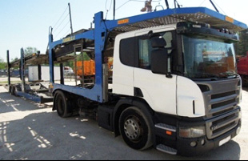
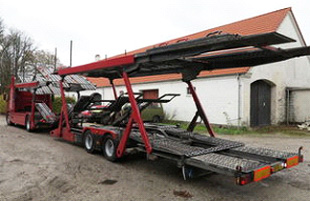
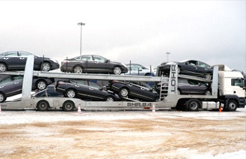
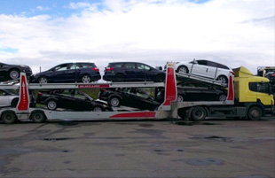
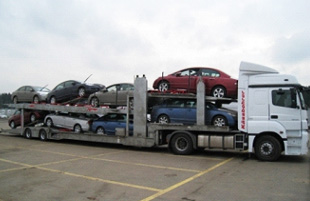
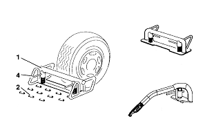
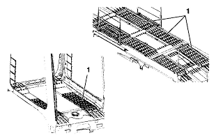
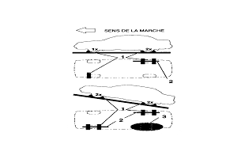
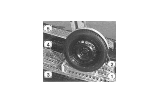

Виды автовозов
Автомобилевоз или автовоз это специальное транспортное средство предназначенное для перевозки автомобилей. Автовоз состоит из тягача и специального прицепа или полуприцепа. В народе автовозы еще по простому называют «возы» с ударением на второй слог. Стандартный автовоз рассчитан на перевозку 7-8 автомобилей класса «В». Все автовозы стоит разделить на две большие группы, отечественные и импортные.
Основные производители отечественных автовозов это (Волгоградский завод), КМЗ (Камский завод), КЗС (Канашский завод), Невинномысский завод, Рой Моторс (Санкт Питербург) и другие. Их всех объединяет особенности конструкции сваренной из простых швеллеров. Поэтому в народе такие автовозы и называют «швеллер». Отличатся такие полуприцепы могут, подвеской (рессорная или пневмо), осями ( отечественные или импортные) и небольшие отличия в вариациях изменения верхней платформы. Основными минусами считаются слабая вместимость и недостаточная внутренняя ширина, которая затрудняет перевозку импортных внедорожников. Плюс такого автовоза сравнительно низкая стоимость.
Основные европейские производители автовозов это LOHR( Франция), ROLFO(Италия) и KASSBOHRER (Австрия). По типу можно разделить на открытые и закрытые, первых преобладающие большинство поэтому на них и остановимся. По конфигурации тягача и прицепа импортные автовозы стоит разделить на классические и полуприцепы. У классических, на шасси тягача устанавливается специальная надстройка, как правило занимающая верхнюю часть кабины (так называемый балкон). За шасси тягача цепляется прицеп с центральным размещением осей. Верхние платформы тягача и прицепа поднимаются и опускаются благодаря двум видам стоек: винтовым и ножничным. Верхние и нижние платформы тягача и прицепа имеют «качалки» (позволяющие вывешивать автомобили) и «провалы»(для колес). Все это необходимо для максимальной вместимости и универсальности перевозки различных классов легковых автомобилей. Все механизмы приводятся в действие при помощи гидравлической, воздушной и электрической систем. В основном на дорогах России из данной категории встречаются такие модели как (LOHR), Formula Arctik 3.6 (Rolfo) и Supertrans (Kassbohrer).
В народе этот тип называют «раскладушки» из-за возможности максимально трансформироваться. На сленге водителей автовозов часто надстройку Eurolohr называют «чайник» из-за схожести конструкции при виде в профиль.
- 
- 
- 
Классические автовозы обладают хорошей маневренностью, это важно в тесных городских условиях при разгрузке в дилерских центрах. Длина всего автопоезда (18,75 м) соответствует европейскому габариту. Поэтому часто такие возы можно встретить на международных направлениях, везущих автомобили из Европы в Россию.
Вторая категория импортных автовозов это полуприцепы для внутренних Российских перевозок. Компоновка: стандартный седельный тягач и полуприцеп-автовоз (общая длина автопоезда 20м) Созданы специально для внутренних перевозок, выезд в Евросоюз таких автовозов требует специального габаритного разрешения. (SHR 8.4 Evo (LOHR), Blizzard 3.2 (ROLFO), Russlan (Kassbohrer))
- 
- 
- 
Представители: SHR 8.4 Evo (LOHR), Blizzard 3.2 (ROLFO), Russlan (Kassbohrer). Данная категория из за своей длины имеет еще большую вместимость. Конструкция платформ схожа с классическим автовозом. Такие же стойки, винтовые или ножничные, такие же «качалки» и «провалы». В настоящее время, условия жесткой конкуренции, в погоне за клиентом, заставляют производителей автовозов вести борьбу за полезное использование каждого миллиметра свободного пространства, ограниченного 20 метрами длинны и 4 метрами высоты. Полуприцепы-автовозы уступают классическим по своей маневренности. У них повышенный радиус разворота. Зато имеют преимущества в использовании стандартного седельного тягача в составе автопоезда.
Импортные автовозы значительно дороже отечественных. Сложные узлы и механизмы требуют регулярного технического обслуживания. Взамен этого дают большую вместимость, а значит увеличивают рентабельность перевозок.
Способы крепления автомобиля на автовозе
-

Для надежной фиксации автомобиля на автовозе существуют специальные правила и приспособления.
-

Если на наклонной платформе, то снизу наклона ставят два откатника слева и с права, а сверху наклона с одной стороны.
-

Колеса автомобиля притягивают к платформе автовоза специальным ремнем с крючками, который обхватывает колесо по протектору. На ремне одет антискользящий чехол улучшающий сцепные свойства ремня и протектора.
-

Чтобы уменьшить раскачивание автомобиля на подвеске в процессе движения автовоза, ремни располагают замками навстречу друг другу под порог, тем самым зажимают свободные ходы подвески.
В пути ремень может намокнуть и растянуться, для этого в обязанности водителя входит регулярная проверка натяжки ремней. За кузов автомобиль никак не крепят, только за колеса. У водителей автовоза существует профессиональное правило «кулак и локоть». Расстояние от поверхности кузова автомобиля до любой другой поверхности будь то платформа автовоза или соседний автомобиль не должно быть менее кулака, 8-10 см. А локоть, 40-50 см., это минимальное расстояние между поверхностями двух автомобилей стоящих на тягаче и прицепе.
Приведенный выше материал, это лишь небольшая часть информации которая входит в обязательную программу обучения водителя автовоза. Существуют правила погрузки и выгрузки автомобилей, специально разработанные производителями и крупными логистическими провайдерами занятыми в автомобильном бизнесе. Эти правила регламентируют порядок приема и сдачи, алгоритм внешнего осмотра и проверки комплектности автомобиля. Требования к специальной одежде водителя-экспедитора так называемому «касперу» (комбинезон из специального материала предотвращающий повреждения ЛКП при соприкосновении). Правила посадки и выхода из автомобиля, передвижения по платформам автовоза и еще много много другой специальной информации. Все это делается с одной целью сократить до минимума статистику повреждений автомобилей при перевозке. На терминалах где происходит погрузка автовозов работают специальные контролеры следящие за соблюдением правил погрузки. В нашей компании этим занимается специальный отдел качества который обучает и контролирует водителей на исполнение этих правил.